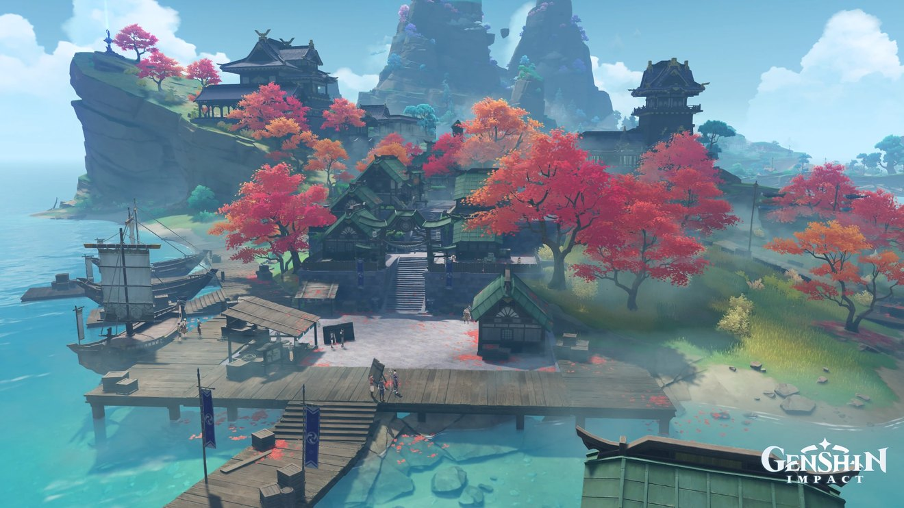
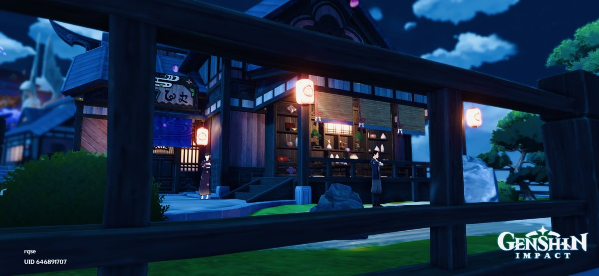
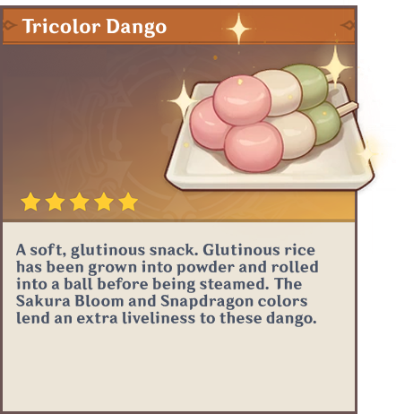
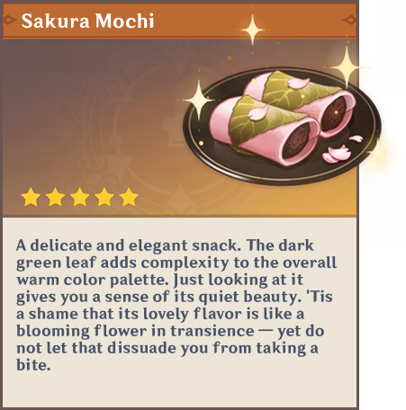
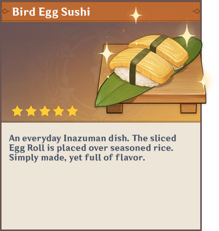
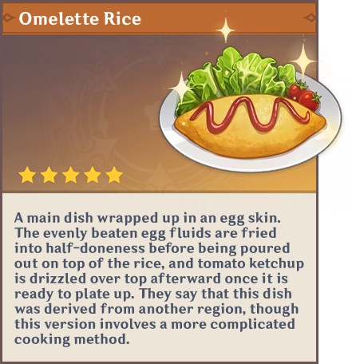

Narukami Island Grand Shrine
Mt. Yougou

A sacred sanctuary nestled among ancient sakura trees, where tradition and spirituality converge under purple skies.
The Realm of Eternal Thunder
Discover a culturally rich archipelago featuring striking purple foliage, traditional shrines, and serene coastal views.
 4 Days / 3 Nights
4 Days / 3 Nights
Your day-by-day journey
Every day balances guided discovery with enough breathing room to enjoy the destination your way. Timing may adjust for weather and local events.

Arrive by boat at Ritou Trading Port and experience your first glimpse of the islands. Check in to your accommodation and enjoy an evening stroll through the lantern-lit streets, sampling local street food.
 Overnight at Inazuma City
Overnight at Inazuma City
Discover the vibrant trading district where international merchants meet. Visit local shops, witness traditional crafts, and understand how Inazuma connects with the wider world.
 Overnight at Inazuma City
Overnight at Inazuma City
Journey to the sacred Grand Shrine on Mt. Yougou, walking through paths lined with electro crystals and sacred sakura. Participate in traditional prayers and witness the eternal beauty of the shrine.
 Overnight at Inazuma City
Overnight at Inazuma City
Visit the magnificent Tenshukaku castle, exploring its grounds and learning about Inazuma's pursuit of eternity. Conclude with a farewell ceremony before your departure transfer.

Taste the culture



